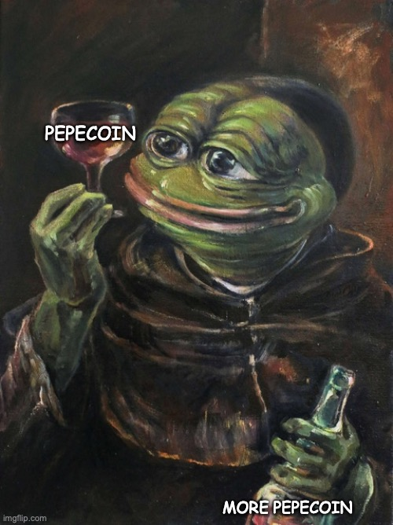
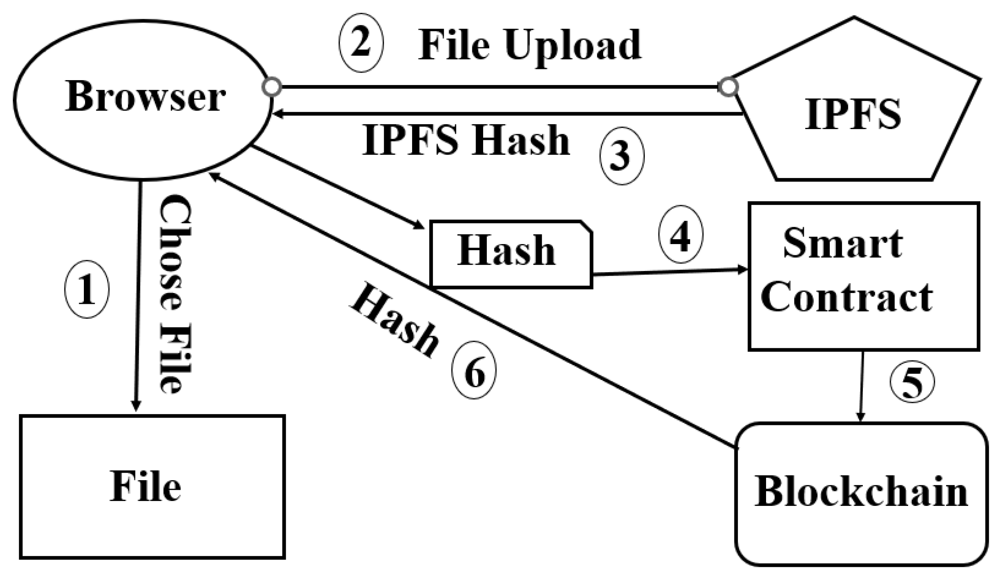
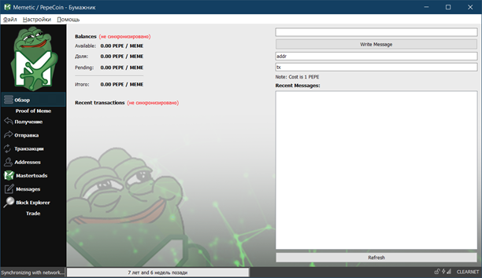
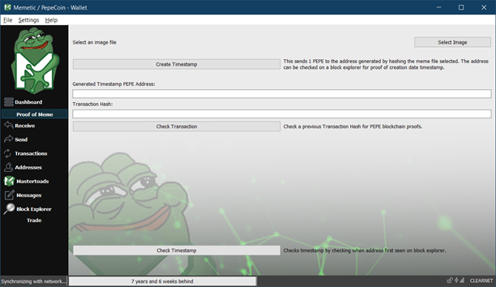
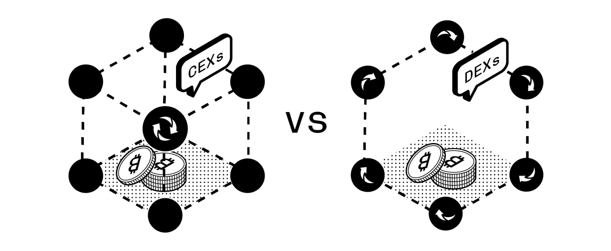

ИС-20-1, Мельник А.Н.
Одним из главных преимуществ блокчейна является прозрачность. Каждый человек может ознакомиться с информацией, хранящейся в блоках, и убедиться в ее достоверности. При этом никто не имеет возможности изменить или уничтожить записи в блокчейне.
Рост популярности блокчейна и его применение в областях, которые не связаны с криптовалютами, поможет усилить влияние блокчейна во всех отраслях экономики.
Переход от централизованных систем к системам распределенных реестров, по словам Де Мейера, основателя DAPS Coin, предполагает примерно 80% изменений в бизнес-процессах и только 20% придется непосредственно на долю технологий.
He who controls the memes controls the world 🌎 🐸. You were warned the memes age is coming.

В марте 2016 года появился PepeCoin, изначально известный как $PEPE, позже он станет Memetic/PepeCoin $MEME в 2017 году
PepeCoin возник на волне популярности DogeCoin. Не один Memetic прославлял великого Pepe The Frog, в 2017 году появился PepeCash, криптовалюта основанная на протоколе биткоина, она начала конкурировать с Memetic 30 мая 2017 года.
Memetic вышел победителем, но тем не менее, несмотря на триумф, PepeCoin не смог заполучить достаточную популярность, большую часть времени оставаясь в тени других альткоинов, данная ситуация отягощается тем, что различных PEPE коинов много.
Пытаясь найти белую книгу, я обратился к телеграмм чату представителей PepeCoin’а чтобы разузнать о ней. Так что я решил просмотреть историю чата, и нашел два случая из, примерно, 20, в которых был хоть какой-то ответ на вопрос о белой книге...
В ходе исследования я решил спросить их сам почему же у них нету белой книги, упоминая при этом второй пункт выше, в итоге за этот вопрос меня забанили. У Memetic отсутствует белая книга, вместо неё используется сайт.
Memetic / Pepecoin — это криптовалюта Proof of Meme (POM) с функциями конфиденциальности и технологией mastertoad. Mastertoad (мастернода) и стейкеры получают вознаграждение за обработку транзакций и коллективное обеспечение безопасности сети.
Proof of Meme (Proof of Stake) — хеширование изображения PoM позволяет вам выбрать изображение, и в обмен на 1 Pepecoin вы получаете закрытый ключ, который доказывает, что вы являетесь владельцем этого хешированного изображения, а также дату и время, когда оно было публично сохранено в цепочке.
Proof of Stake (Доказательство доли владения) — механизм консенсуса, при котором право на генерацию новых блоков, проверку транзакций и включение их в блокчейн по определенному алгоритму разыгрывается между вычислительными узлами (нодами) с учетом того, какой суммой монет данного блокчейна они владеют.
Mastertoad (Masternode) — это узел, который не только хранит полную копию блокчейна и проводит транзакции, но и выполняет другие задачи по обеспечению работы сети. Например, осуществляет перемешивание транзакций в анонимных валютах.
С MasterToad (15000 MEME) можно запустить свой собственный узел, укрепить и защитить блокчейн PepeCoin. MasterToad получают процент от вновь добытых блоков. 37,5% от вновь добытого блока будет выплачиваться MasterToad.
Memetic / Pepecoin является платформой хранения мемов IPFS.
InterPlanetary File System (межпланетная файловая система) — это децентрализованная сеть обмена файлами. Также выполняющая функцию сети доставки содержимого. IPFS является потенциальной заменой HTTP.
У PepeCoin есть свой некастодиальный криптокошелек

Кошелек нужно синхронизировать с сетью, так как синхронизация в одноранговых сетях может занять много времени, мы скачаем bootstrap (начальная загрузка) файлы и скинем их в папку %APPDADA%. Эти файлы необходимы для более быстрой синхронизации, с него кошелек берёт данные о блокчейне до определённой даты, когда был сделан этот bootstrap, оставшиеся блоки загружаются через одноранговую сеть. Но мы синхронизироваться не будем.

На вкладке Proof of Meme можно загрузить фотографию с мемом за 1 PepeCoin, после чего он захешируется и добавиться в блокчейн. Таким образом осуществляется стейкинг.
Memetic / PepeCoin торгуется на биржах bittrex и txbit
Memetic также разрабатывают Kekdaq. Он работает на блокчейне Pepecoin и призван служить столь необходимому месту для сохранения мемов и их редкости. С Kekdaq вы можете создавать, делиться и обменивать мемы на MEME или KDAQ, а с незначительной комиссией вы можете брать свои любимые мемы и токенизировать их.
Kekdaq, используя блокчейн Memetic, обеспечивает хранилище изображений и файлов, защищенное хешем, с возможностью децентрализованной модерации. Kekdaq является форком Counterparty DEX, децентрализованной биржи.
По моему мнению Memetic / PepeCoin является довольно уникальным альткоином со своим блокчейном, и столь же уникальным его применением в KEKDAQ для хранения мемов.
Как мы видим блокчейн (и криптовалюты) имеет широчайшие перспективы и может использоваться в совершенно разных сферах. Но несмотря на весь мой восторг у блокчейна есть проблемы…
“Блокчейн является незрелым ребёнком… Отец блокчейна играя с собачками, проморгал момент, когда его дитё должно было выйти в мир и социализироваться, из-за чего use-case’ов использования не так уж много. Также использование блокчейна вместо других технологий, всё же, как ни как, требует изменения системы, а иногда вообще создание её с нуля. Но ребёнок растёт, и отец перестаёт играть с собачками…” — безымянный эксперт по блокчейну